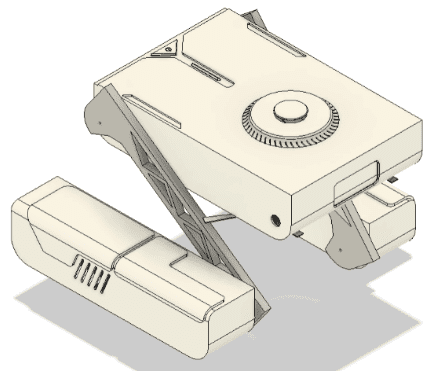
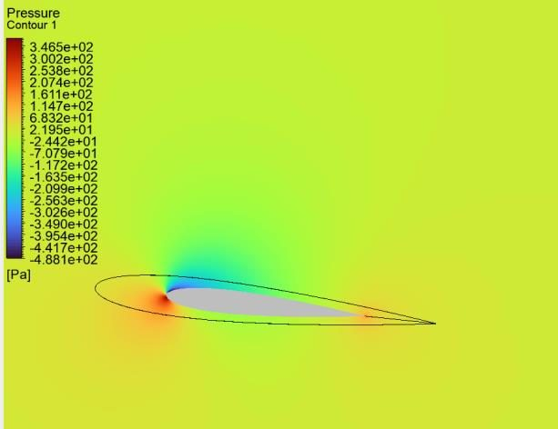
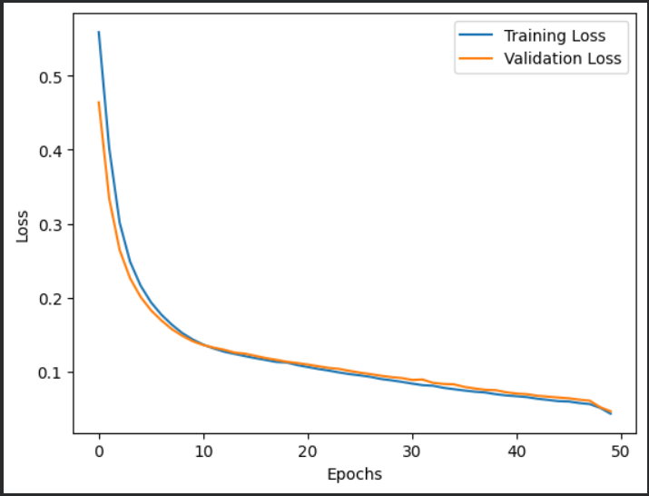
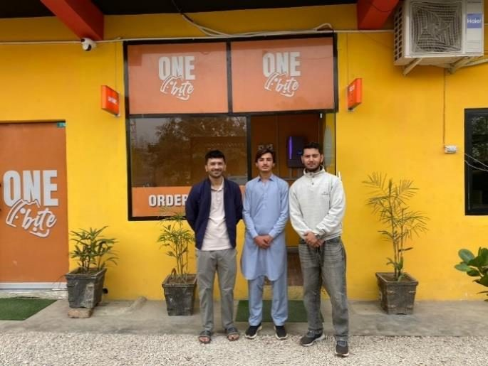
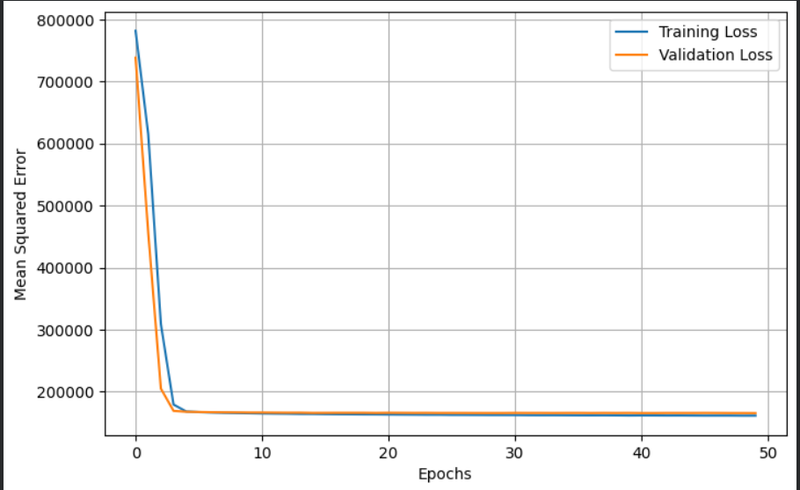
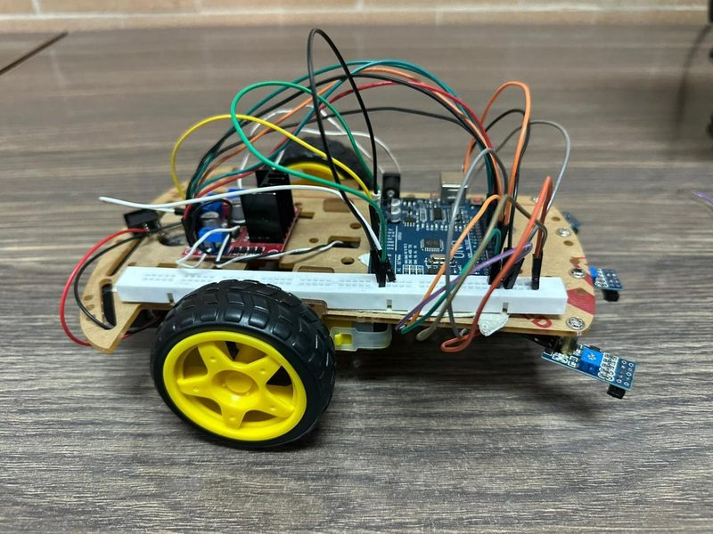
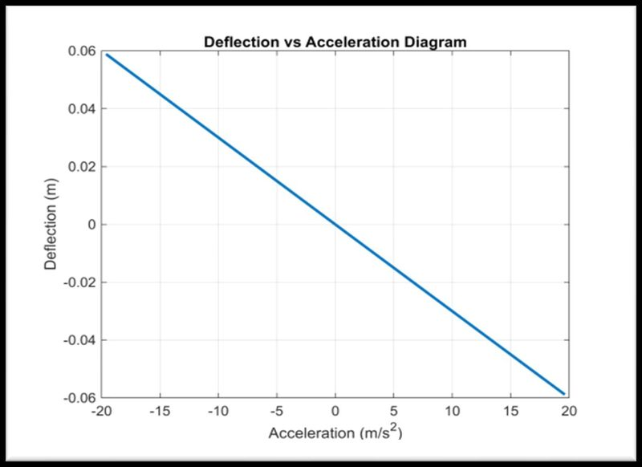
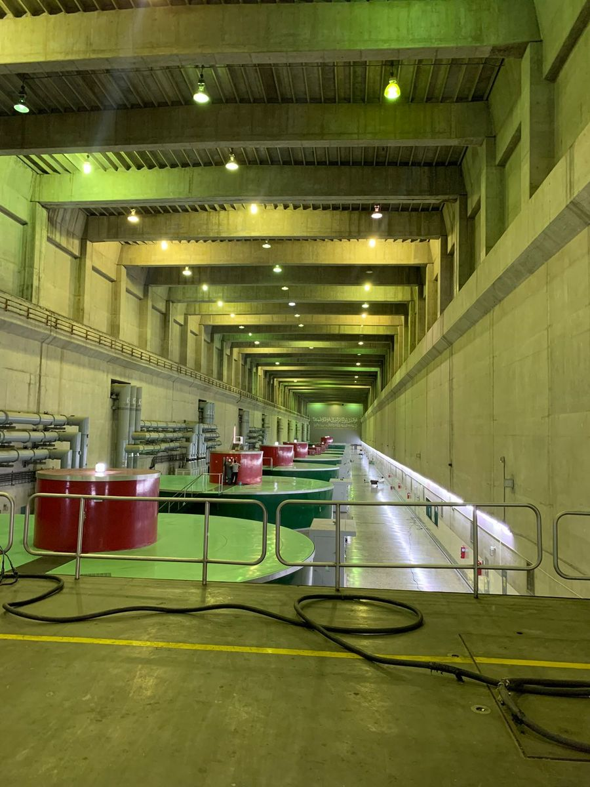
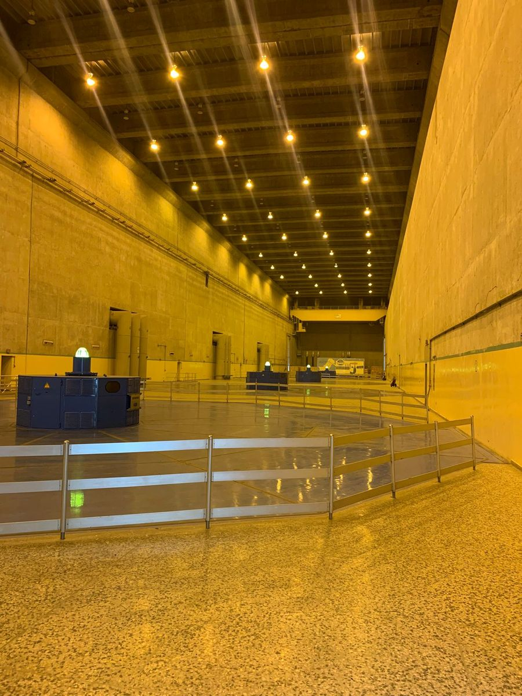

Robotics3RD PLACE, OPEN HOUSE 2026Mecanum-Wheel Stair-Climbing Robot
Compact mecanum-wheel robot with leg modules that climbs stairs up to about 239 mm.
- Domain
- Robotics and mechatronics
- Result
- Climbs stairs up to about 239 mm
Mechanical Engineer
Theory Calculation Simulation Prototype
BS Mechanical Engineering from GIKI, based in Bahawalpur, Pakistan, and open to relocation.

Robotics3RD PLACE, OPEN HOUSE 2026Compact mecanum-wheel robot with leg modules that climbs stairs up to about 239 mm.
 Thermal and energyPUBLISHED 2025
Thermal and energyPUBLISHED 2025Exergy analysis of an R600a organic Rankine cycle for remote geothermal heat; published paper.
 FEA and structures
FEA and structuresThermal, structural, modal and harmonic analysis of a titanium compressor blade in ANSYS.
 Robotics
RoboticsYOLOv8 detection feeding a ROS robot arm for autonomous grasping, mAP50 0.9894.

CFD and fluidsPAPER ACCEPTEDBio-inspired hydrofoil refined in ANSYS CFX: 58 percent higher L/D. Paper accepted.
 Condition monitoring
Condition monitoringVibration, sound and motor current dataset from nine ball bearings with EDM defects.

Condition monitoringKeras network that classifies bearings as healthy or faulty at 99.13 percent test accuracy.
 Thermal and energy
Thermal and energyCOMSOL study of channel geometry in a cross-flow heat exchanger, up to 5260.8 W/m2K.
 Electrical machines
Electrical machinesANSYS Maxwell study of winding switching for induction motor flux weakening.
 FEA and structures
FEA and structuresTitanium bracket sized in Excel, with a SolidWorks topology study.
 Robotics
RoboticsSingle-motor walking robot on a Klann linkage, printed in PLA.

OperationsSurvey-based supply chain study of a restaurant near GIKI.
 Vision and ML
Vision and MLYOLOv8 crack detector trained on 125 labelled images.
 Controls
ControlsSimulink yaw control of a 2-DOF tailplane with an autotuned PID.
 Machine design
Machine designFixed-fixed stepped shaft designed by hand and checked in ANSYS.
 Controls
ControlsArduino PWM motor drive, derived motor model and simulated PID.
 Machine design
Machine designFoot-switch belt conveyor sized for a 100 N load.

Vision and MLNeural network regression of nanofluid heat transfer coefficient.

RoboticsThree-wheel Arduino robot following a black line with three IR sensors.

Machine designMATLAB spring-mass accelerometer model, linear over plus and minus 2 g.
Mechanical Engineering Intern
9 Aug 2025 to 8 Sep 2025
Haripur, Khyber Pakhtunkhwa, Pakistan
Observational placement


Materials Proceedings 2025, 23, 10
Second author
Published 31 July 2025
Materials Proceedings
Co-author
Accepted, awaiting publication in Materials Proceedings
BS Mechanical Engineering
Sep 2022 to Jun 2026
Topi, Khyber Pakhtunkhwa, Pakistan
CGPA 3.12/4.00
Senior Design Project: A in both parts
I studied Mechanical Engineering at GIKI and completed 20 projects covering machine design, FEA, CFD, heat transfer, controls, vibration and data analysis. I am second author on a paper published in Materials Proceedings, and a second paper is accepted and awaiting publication. My senior design project, built in a team of 3, placed Third at GIKI Open House 2026. I also spent 4 weeks on an industrial placement, following maintenance and condition monitoring routines at a working plant.
Let's connect. Write or call.